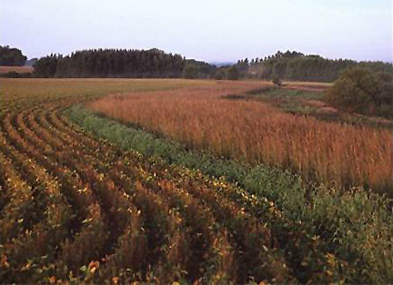

Extended Crop Rotations

Crop rotations have the potential to build soil organic matter, sequester carbon, increase soil quality and minimizing greenhouse gas emissions. Increasing the diversity of cropping systems has the potential to maximize resiliency of the corn-based system under variable weather conditions. Much of the Corn Belt states have a significant percentage of agricultural land area in a corn-soybean crop rotation. When corn prices increase, corn-soybean rotations are often replaced with continuous corn. Currently, approximately 20 percent of all acres in the Midwest Corn Belt are in continuous corn. This number is likely to increase in the future as demand for corn grows. This project will use data collected from long-term (20 years) established rotation experiments and by performing a set of new experiments to compare no rotation (continuous corn), two-crop rotations (corn-soybean), and extended rotations including a third crop (e.g., winter wheat or oats) or another crop harvested multiple years (i.e., alfalfa).
Speed Science